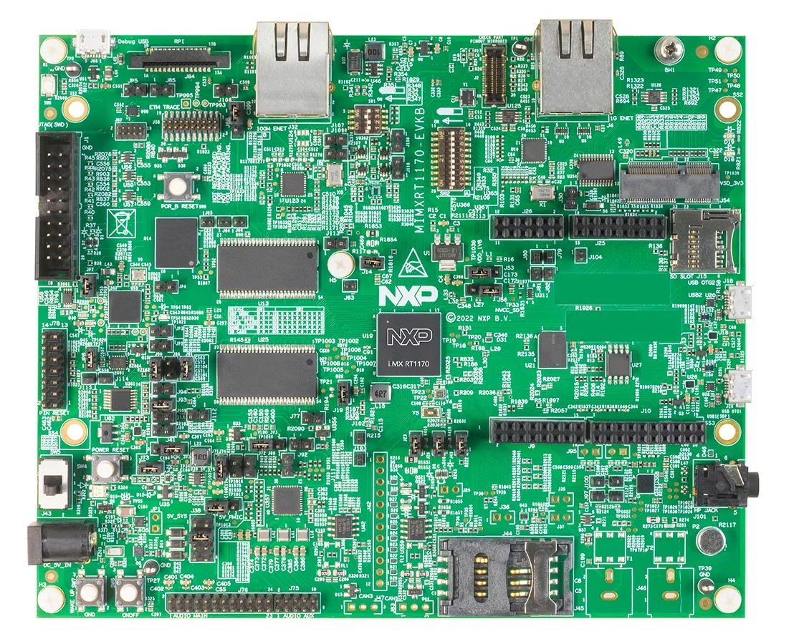
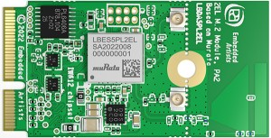
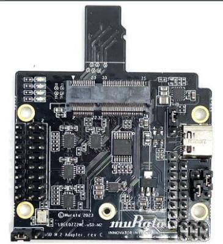
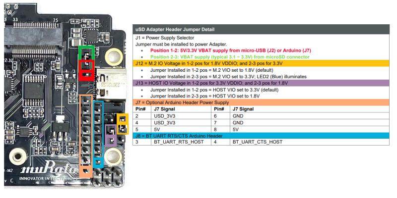
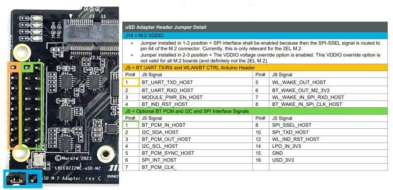

MATTER NXP RT1170 Applications Guide#
Introduction#

The RT1170 application provides a working demonstration of the RT1170 board integration, built using the Project MATTER codebase and the NXP MCUX SDK.
The RT1170 examples target the NXP MIMXRT1170-EVKB board by default.
Supported configurations#
The example supports:
Matter over Wi-Fi
Matter over Openthread
Matter over Wi-Fi with Openthread Border Router support
Here are listed configurations that allow to support Matter over Wi-Fi & Matter over Thread on RT1170 :
RT1170 + IW612 (Wi-Fi + BLE + 15.4)
Note: For CMake builds, Matter over Wi-Fi is the default configuration when no
prj_<flavour>.conffile is specified in the build.
Supported build systems#
RT1170 platform supports two different build systems to generate the application :
CMake
Hardware requirements for RT1170 + IW612#
Host part:
1 MIMXRT1170-EVK-B
Transceiver part :


Male to female Burg cables
Hardware rework for SPI support on MIMXRT1170-EVK-B#
To support SPI on the MIMXRT1170-EVK-B board, it is required to remove 0Ω resistors R404,R406,R2015.
Board settings (Spinel over SPI, I2C, BLE over UART)#
Plug IW612 module to M.2 connector on Murata uSD to M2 adapter
The Murata uSD-M2 adapter should be plugged to the RT1170 via SD-IO.
The below tables explain pin settings (SPI settings) to connect the MIMXRT1170-EVK-B (host) to a IW612 transceiver (rcp).
Murata uSD to M2 adapter connections description:


Jumpers positions on Murata uSD to M2 adapter:
Use USB-C power supply
Jumper
Position
J1
1-2
J12
1-2
J13
1-2
J14
1-2
JP1.1 (back side)
ON
Jumpers positions on MIMXRT1170-EVK-B:
Jumper
Position
J562-3I2C connection to program
IO_Expanderon the IW612 moduleMIMXRT1170-EVK-B
uSD-M2 adapter
I2C_SDA (J10.18)J5.2I2C_SDL (J10.20)J5.4SPI connection between RT1170 and uSD-M2 adapter
MIMXRT1170-EVK-B
uSD-M2 adapter
SPI_MOSI (J10.8)J5.10SPI_MISO (J10.10)J9.7SPI_CLK (J10.12)J9.8SPI_CS (J10.6)J5.8SPI_INT (J26.4)J5.6GND (J10.14)J5.15UART BLE and Reset connections between RT1170 and uSD-M2 adapter
MIMXRT1170-EVK-B
uSD-M2 adapter
RESET (J26.2)J9.3UART_RXD (J25.13)J9.1UART_TXD (J25.15)J9.2UART_CTS (J25.9)J8.4UART_RTS (J25.11)J8.3GND (J26.1)J7.6
Building#
Make sure to follow shared build instructions from MATTER NXP Examples Guide for FreeRTOS platforms to set-up your environment.
In the following steps, the “all-clusters-app” is used as an example.
CMake Build System#
The example supports configuration and build with CMake build system. You can find more information in CMake Build System section which explains how to further configure your application build.
In the west build command, the board option can be replaced with
evkbmimxrt1170 for MIMXRT1170-EVK-B, and the core_id to use is cm7. The
Kconfig CONFIG_MCUX_COMPONENT_component.wifi_bt_module.IW61X should be set to
y to enable the IW612 transceiver.
Example of build command to build the All-Clusters app with Matter-over-WiFi configuration on RT1170 platform :
user@ubuntu:~/Desktop/git/connectedhomeip$ west build -d build_matter -b evkbmimxrt1170 examples/all-clusters-app/nxp -DCONF_FILE_NAME=/prj_wifi.conf -Dcore_id=cm7 -DCONFIG_MCUX_COMPONENT_component.wifi_bt_module.IW61X=y
Note that the RT1170 example supports various configurations that can be
provided to the CONF_FILE_NAME variable, you can refer to the
table of available project configuration files and platform compatibility
to check all the supported configurations.
Note : BLE and Matter-CLI are enabled by default in Matter applications built with CMake. To disable them, you can refer to the How to customize the CMake build section.
Manufacturing data#
See Guide for writing manufacturing data on NXP devices
Other comments:
The all cluster app demonstrates the usage of encrypted Matter manufacturing data storage. Matter manufacturing data should be encrypted using an AES 128 software key before flashing them to the device flash.
Flashing and debugging#
We recommend using JLink from Segger to flash the example application. It can
be downloaded and installed from
https://www.segger.com/products/debug-probes/j-link. Once installed, JLink can
be run to flash the application using the following steps :
$ JLink
J-Link > connect
Device> ? # you will be presented with a dialog -> select `MIMXRT1176xxxA_M7`
Please specify target interface:
J) JTAG (Default)
S) SWD
T) cJTAG
TIF> S
Specify target interface speed [kHz]. <Default>: 4000 kHz
Speed> # <enter>
J-Link > exec EnableEraseAllFlashBanks
J-Link > erase 0x30000000, 0x34000000
Program the application executable :
J-Link > loadfile <application_binary>
To program an application in binary format you can use the following command instead :
J-Link > loadbin <application_binary>.bin 0x30000000
Testing the example#
To test the example, please make sure to check the Testing the example section
from the common readme
MATTER NXP Examples Guide for FreeRTOS platforms.
UART details#
Testing the example with the CLI enabled will require connecting to UART1 and UART2, here are more details to follow for RT1170 platform :
UART1 : To view output on this UART, a USB cable could be plugged in.
UART2 : To view output on this UART, the
pin 4onconnector J9should be plugged to anUSB to UART adapter.
OTA Software Update#
Over-The-Air software updates are supported with the RT1170 examples. The process to follow in order to perform a software update is described in the dedicated guide ‘Matter Over-The-Air Software Update with NXP RT example applications’.
Thread Border Router overview#
To enable Thread Border Router support see the build section.
The complete Border Router guide is located here.